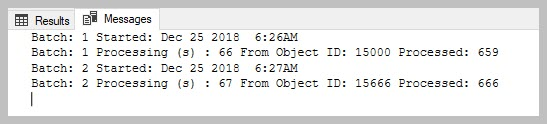

Update large tables using batch mode¶
Updating tables using batch mode is introduced to improve working with large volumes of data. The aim is to perform updates in smaller batches to improve throughput and reduce the impact of failures.
Why use it: a) when taking on the records from M-Files into SQL with a large volume. It can also be used for mass updating of records from SQL into M-files. b) there is nothing that prevents the use of this procedure for low volumes, but it is certainly advisable to use it for record sets in excess of 10 000 c) This procedure will update records in sets. If the procedure is stopped, or fail the records already updated will be in tact. d) It is easier to monitor progress through a large data set e) batch sizes are calculated automatically based on the maxobjid. it should be between 500-700 e) It is normal to experience approx 16 updates per second (or approx 40 per batch) and for update method 1 and 8 updates per second (approx 80 per batch) f) in the case of update method = 1 the processing takes place sequencially based on the MinObjid. If no objid’s exist for the class within the range, then no records will be processed for the batch. The processing will still take place. g) only one class within an object type can be processed at a time. h) in the case of update method 0 the series of ids to be updated will be determined from all objects set to process_id = 1. This set will be batched and processed. i) when updating with updatemethod = 0 and something goes wrong, it is likely that all the outstanding records will show process_id as 99. It is not necessary to reset the process_id. Just rerun the procedure to continue the update.
Parameters: @maxobjid : get the largest M-Files ID in the object type: The range, rather than the exact number is important. for instance 100000 for any id up to 199999. If in doubt select a higher number.
@BatchesToRun: only applies to updatemethod = 1; M-Files need to catch up with indexing. in the case of really large volumes (100 0000 plus), it is recommended to limit each run to approx 200 batches and then first allow M-Files background processes to catch up before running the next update.
@MinObjid: only applies to updatemethod = 1; this allows for the process to restart at a specific objid
@WithStats: setting this param to 0 will allow this procedure run without showing the progress.
Update from M-Files to SQL¶
EXEC [dbo].[spMFUpdateTableinBatches] @MFTableName = 'MFLarge_Volume' -- nvarchar(100)
,@UpdateMethod = 1 -- MF to SQL
,@maxObjid = 60000 -- int
,@BatchestoRun = 2 -- int
,@MinObjid = 15000 -- default is 1
,@WithStats = 1 -- default is 1
,@Debug = 0 -- default is 0

Interpreting the results. Processing (s) 47: show the number of seconds to process the batch From Object ID: the start id of the batch Processed : 0 no objects where found within the range Processed : 40 as the batch size is say 560 it means only 40 records was in the range for the class
Why there is no records to process: records deleted in M-Files the objid is unique within the object type. if there are many classes in an object type, then it is likely that some of the id’s refer to other classes in the object type.
Updating from SQL to M-Files¶
EXEC [dbo].[spMFUpdateTableinBatches] @MFTableName = 'MFLarge_Volume' -- nvarchar(100)
,@UpdateMethod = 0 -- MF to SQL
,@maxObjid = 60000 -- int
--,@BatchestoRun = 2 -- int
--,@MinObjid = 100 -- default is 1
,@WithStats = 1 -- default is 1
,@Debug = 0 -- default is 0

Interpreting the result (2000 rows affected) the run will show the total number of records to be updated remaining: 1500 this show the number of records still to be processed.